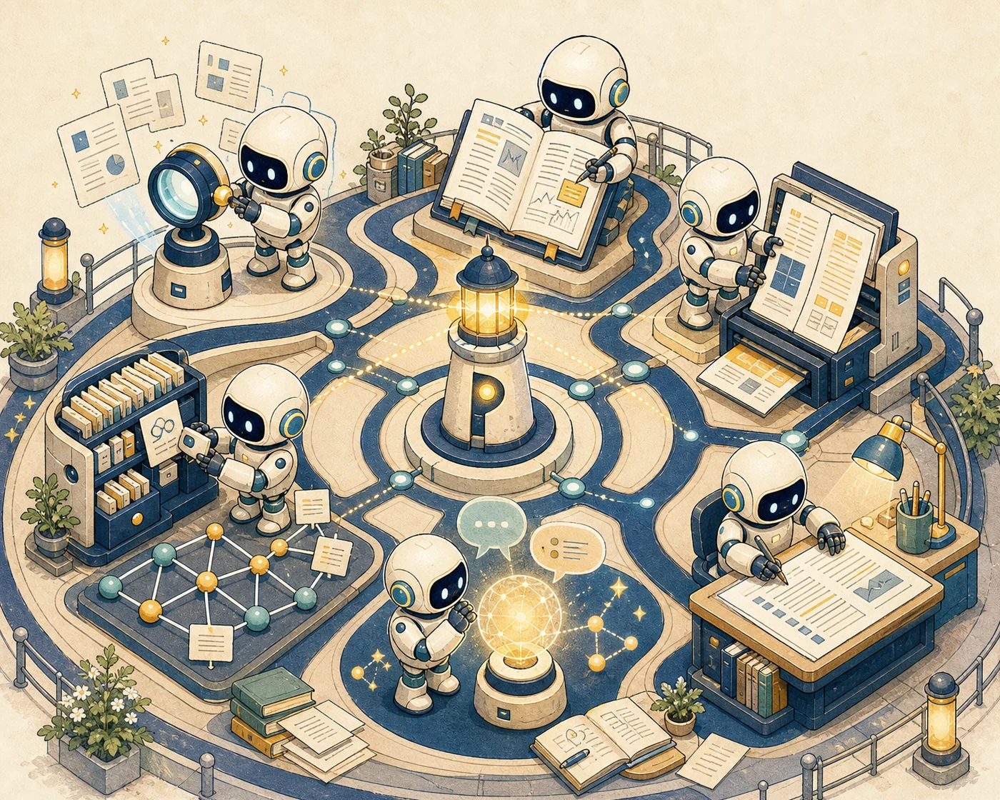

1
注意力机制就是你所需要的一切
摘要
主流的序列转换模型依赖复杂的循环或卷积神经网络，并由编码器与解码器组成。
我们提出一种全新的简洁网络架构 Transformer，它完全建立在注意力机制之上。
实验表明，该模型质量更高，同时具备更强的并行计算能力。
1 引言
循环神经网络长期以来一直是序列建模与序列转换问题中的主流方法。
注意力机制可以直接建模依赖关系，而不受序列距离的限制。
CURRENT FOUNDATION · DEEP READING
版式感知的双语阅读降低语言阻力；检索、批注与归档继续留在同一条研究脉络中，让注意力回到方法、证据与结论。
Earlier sequence systems commonly rely on recurrence or convolution, pairing an encoder with a decoder.
This paper introduces the Transformer, a simpler architecture built around attention.
The model improves quality while allowing substantially more parallel computation.
Recurrent networks have long been a standard choice for sequence modeling and transduction.
Figure 1 · Scaled Dot-Product Attention
Attention can connect distant positions directly instead of stepping through a sequence one token at a time.
A REAL READER, NOT AN IMAGE VIEWER
缩放、拖动、选择复制、页内查找、高亮和笔记都留在原处。原文、中文与中英双版，在同一个阅读空间切换。
 Pharos
Pharos主流的序列转换模型依赖复杂的循环或卷积神经网络，并由编码器与解码器组成。
我们提出一种全新的简洁网络架构 Transformer，它完全建立在注意力机制之上。
实验表明，该模型质量更高，同时具备更强的并行计算能力。
循环神经网络长期以来一直是序列建模与序列转换问题中的主流方法。
注意力机制可以直接建模依赖关系，而不受序列距离的限制。
01选择与复制pdf.js 文本层，不是截图
02页内查找在整篇论文里定位术语
03高亮与笔记坐标跟随 PDF，不跟随屏幕
04原 / 中 / 双语阅读方式随时切换
ONE QUESTION · ONE CONTINUOUS ROUTE
从问题形成、文献发现、证据精读到知识沉淀，研究应当在同一个上下文里持续推进。当前阅读与文库链路已经接通，实验与写作是下一段航程。
把视觉、语言与动作统一进同一序列建模框架，并验证跨任务迁移能力。
在潜空间内学习环境动态，让智能体先在想象中演练。
从视频先验中获得可迁移的操作表示。

THE WORKSHOP AROUND THE LIGHT
发现、精读、知识、实验与写作共享同一份研究上下文。每一次阅读都不再孤立，而会成为下一步判断、实验和论证的基础。
OPEN, SELF-HOSTED, AND CLEAR ABOUT DATA FLOW
翻译引擎以独立进程运行；文件、文库与账户数据由你部署的核心保存。翻译、速览与元数据补全会按配置访问外部服务，也可接自托管兼容端点。
代码、文件与文库由你掌控；外部服务按配置调用。
argon2id 密码哈希、JWT 与所有者范围校验。
覆盖账户、任务、翻译、每日论文、检索与标注。